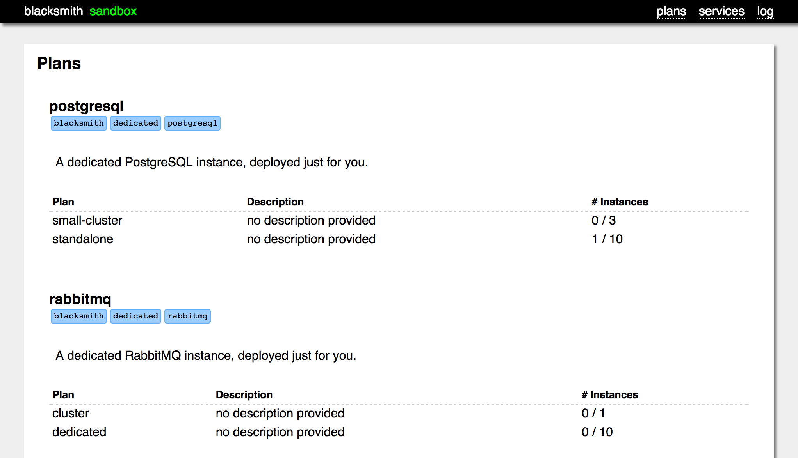
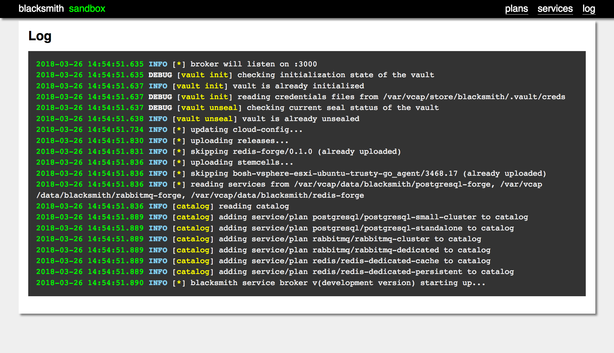

On-demand and shared services are provided by Blacksmith. Blacksmith is a service broker for Cloud Foundry that uses a dedicated BOSH director to deploy actual VMs in response to service provisioning requests. If a CF user wants a PostgreSQL box all to themselves, Blacksmith will do so.
The magic of Blacksmith is accomplished by way of Forges, small bits of configuration, packaged up as a BOSH release, that can be added into a Blacksmith deployment.
The Blacksmith Genesis Kit packages five forges at the moment:
Refer to their specific project pages for more details information on their features and configuration.
The Blacksmith Kit documentation explains how to configure each of these Forges and their service offerings.
Get information about your Blacksmith
If deployed with Genesis, genesis info my-env will dump most of the relevant
information for the deployment. This includes general env and deployment
information, URLs and creds for the bosh director and UI, and the
catalog of services.
genesis info my-env
================================================================================
BLACKSMITH Deployment for Environment 'my-env'
Last deployed about a week and a half ago (10:04PM on Oct 25, 2019 UTC)
by admin
to BOSH my-env
based on kit blacksmith/0.5.0
using Genesis v2.6.16
with manifest .genesis/manifests/my-env.yml (redacted)
--------------------------------------------------------------------------------
ca certificate
...
bosh env
Using environment 'https://10.128.80.129:25555' as client 'admin'
Name my-env-blacksmith
UUID e33feb30-0e9d-4461-906e-18239abba00c
Version 270.2.0 (00000000)
Director Stemcell ubuntu-xenial/315.36
CPI vsphere_cpi
Features compiled_package_cache: disabled
config_server: disabled
local_dns: enabled
power_dns: disabled
snapshots: disabled
User admin
Succeeded
blacksmith (internal) bosh director
bosh url: https://10.128.80.129:25555
username: admin
password: ...
blacksmith web management UI
web url: http://10.128.80.129:3000
username: blacksmith
password: ...
clickable: ...
blacksmith catalog
Service Plans Tags
======= ===== ====
mariadb standalone blacksmith
dedicated
mariadb
postgresql small-cluster blacksmith
standalone dedicated
postgresql
rabbitmq small-cluster blacksmith
standalone dedicated
rabbitmq
redis standalone blacksmith
dedicated
redis
================================================================================
Register a Blacksmith Broker
Before your Cloud Foundry users can start provisioning services via your new Blacksmith, it has to be registered with Cloud Foundry, and enabled in the CF marketplace.
The register Genesis kit addon makes this easy.
$ genesis do my-env register
Running register addon for my-env
authenticating to https://api.system.10.128.80.140.netip.cc as admin...
Setting api endpoint to https://api.system.10.128.80.140.netip.cc...
OK
api endpoint: https://api.system.10.128.80.140.netip.cc
api version: 2.138.0
Not logged in. Use 'cf login' to log in.
API endpoint: https://api.system.10.128.80.140.netip.cc
Authenticating...
OK
Use 'cf target' to view or set your target org and space.
creating service broker my-env-blacksmith...
Creating service broker my-env-blacksmith as admin...
OK
enabling service access...
...
You can verify that the broker is registered, by checking that it
is listed in the output of cf service-brokers
For more details, refer to Managing Service Brokers, in the official Cloud Foundry documentation.
This makes all the plans and services owned by the
your-env-name-blacksmith broker available to all orgs and spaces
in your Cloud Foundry instance. If you need stricter permissions,
check the Marketplace Access Control section of the
official Cloud Foundry documentation.
You can verify the publication of your Blacksmith broker’s plans
by running cf marketplace and checking that you see the plans
you defined in your Blacksmith manifests.
Access the Blacksmith Management UI
The Blacksmith Management Web UI provides an overview of what is going on with a single Blacksmith Services Broker.
You can get the UI by using the visit addon
$ genesis do my-env visit
Running visit addon for my-env
The visit addon will perform auth for you. If for any reason, you need to
auth manually, all of Blacksmith is protected by HTTP basic authentication.
The username is always blacksmith, and the password can be found in
your Vault:
$ safe read secret/my/env/blacksmith/broker:password
The UI lists the current catalog:

It also lists all deployed instances:

Finally, the last 8,000 (or so) log lines are buffered and printed to the Log section:

Provision a Service via cf
Cloud Foundry users can create new services using the standard
process, with the cf command-line utility:
$ cf create-service dedicated-redis standalone my-kvstore
This will create a dedicated Redis instance, as a standalone,
single-VM deployment. The name of the service (which is
arbitrary) will be my-kvstore.
Blacksmith is an asynchronous service broker, so the
create-service operation will return immediately, but the
service will be marked as in progress, until the Blacksmith BOSH
director has finished deploying it. You can check on the progress
by issuing:
$ cf service my-kvstore
Once the service is created, it can be bound to an application:
$ cf bind-service key-value-app my-kvstore
The first argument is the application name (from a cf push), and
the second argument is the name we gave the service in our cf create-service call.
For more in-depth review of Cloud Foundry services and applications, check the Service Overview in the official Cloud Foundry documentation.
Remove a Service via cf
To remove a service, Cloud Foundry users should use the standard
cf command-line utility.
First, get a list of services provisioned in the current space:
$ cf services
If the service you want is bound to any applications, it will need to be unbound before it can be deleted:
$ cf unbind-service app-name service-name
Then, it can be deleted:
$ cf delete-service service-name
Blacksmith is an asynchronous service broker, so the
delete-service operation will return immediately, but the
service will be marked as in progress, until the Blacksmith BOSH
director has finished deploying it. You can check on the progress
by issuing:
$ cf service service-name
but be aware that once the operation succeeds, the service
information will be purged from the Cloud Foundry database, so cf service will start failing because the service is unknown.
For more in-depth review of Cloud Foundry services and applications, check the Service Overview in the official Cloud Foundry documentation.
Install boss
boss is a command-line utility for interacting with blacksmith.
boss can be helpful to see what blacksmith services are running or to
troubleshoot provisioning services outside of a Cloud Foundry or
Kubernetes cluster. Blacksmith, like all Cloud Foundry service brokers,
conforms to OSB. So, you can use other service broker tools to interact
with Blacksmith, such as eden. However, boss is designed specifically
for Blacksmith which provides it some advantages, such as being able to see
all services provisioned by Blacksmith, provisioned via boss or otherwise.
Installation is simple, download the binary for
your environment from the most recent release, and
it put in your PATH as boss.
Using boss with your Blacksmith
Using boss as a Genesis addon, there is no setup required. Genesis will
hand the creds to boss for the Blacksmith deployment. This can be helpful if
you are running multiple blacksmiths. You can quickly go between them by
allowing genesis to handle the creds for each deployment.
$ genesis do my-env boss [command]
$ genesis do my-dev-env boss [command]
$ genesis do my-prod-env boss [command]
If you want to be able to use boss independently of Genesis, you can do
that, too. The easiest way is to export a few environment variables. You
can find the info for these using genesis.
$ genesis info my-env
...
blacksmith web management UI
web url: http://10.128.80.129:3000
username: blacksmith
password: ...
...
$ export BLACKSMITH_URL=http://10.128.80.129:3000
$ export BLACKSMITH_USERNAME=blacksmith
$ export BLACKSMITH_PASSWORD= ...
boss also supports these being passed in as command line arguments.
-U, --url (required) URL of Blacksmith
Defaults to $BLACKSMITH_URL
-u, --username (required) Blacksmith username.
Defaults to $BLACKSMITH_USERNAME
-p, --password (required) Blacksmith password.
Defaults to $BLACKSMITH_PASSWORD
Provisioning Services via boss
boss allows you to bypass Cloud Foundry or Kubernetes and create
services directly in Blacksmith. This can be extremely useful in
debugging and diagnosing service related issues, especially if
Cloud Foundry or Kubenetes seem to be responsible for some
strange behavior.
That said, be sure use this tool responsibly. Services provisioned via boss are
done so directly with the Blacksmith broker. These services will appear in the
Blacksmith Management UI and these services will still count against
your service quotas, but will not show up in cf services. This can
make services provisioned using this tool easy to forget about, so remember to
clean up after yourself when debugging in this manor.
To see what services are available, use boss catalog
$ genesis do my-env boss catalog
Running boss addon for my-env
Service Plans Tags
======= ===== ====
mariadb standalone blacksmith
dedicated
mariadb
postgresql small-cluster blacksmith
standalone dedicated
postgresql
rabbitmq small-cluster blacksmith
standalone dedicated
rabbitmq
redis standalone blacksmith
dedicated
redis
To provision a service, use boss create
$ genesis do my-env boss create redis/standalone
Running boss addon for my-env
redis/standalone instance jolly-minsky created.
Using boss to Interact with Services
To see what services are running, use boss list. This list all services
provisioned on the specified Blacksmith, boss provisioned or otherwise.
$ genesis do my-env boss list
Running boss addon for my-env
ID Service Plan
== ======= ====
85036887-0030-4707-a496-02b51f41a08f mariadb standalone
jolly-minsky redis standalone
You can get information about a service using the commands: boss creds,
boss manifest, and boss task.
boss creds and boss task can throw a 500 error. creds
will not work until the service is fully deployed and task needs the
deployment task to have started before it will return properly.
$ genesis do my-env boss task jolly-minsky
Running boss addon for my-env
# jolly-minsky
Task 496 | 15:52:17 | Preparing deployment: Preparing deployment started
Task 496 | 15:52:18 | Preparing deployment: Preparing deployment finished
Task 496 | 15:52:18 | Preparing deployment: Rendering templates started
Task 496 | 15:52:18 | Preparing deployment: Rendering templates finished
Task 496 | 15:52:18 | Preparing package compilation: Finding packages to compile started
Task 496 | 15:52:18 | Preparing package compilation: Finding packages to compile finished
Task 496 | 15:52:18 | Creating missing vms: standalone/31d6bb24-abdb-49d4-b928-514281e23f0e (0) started
$ genesis do my-env boss creds jolly-minsky
Running boss addon for my-env
!!! API 500 Internal Server Error
$ genesis do my-env boss task jolly-minsky
Running boss addon for my-env
# jolly-minsky
Task 496 | 15:52:17 | Preparing deployment: Preparing deployment started
Task 496 | 15:52:18 | Preparing deployment: Preparing deployment finished
Task 496 | 15:52:18 | Preparing deployment: Rendering templates started
Task 496 | 15:52:18 | Preparing deployment: Rendering templates finished
Task 496 | 15:52:18 | Preparing package compilation: Finding packages to compile started
Task 496 | 15:52:18 | Preparing package compilation: Finding packages to compile finished
Task 496 | 15:52:18 | Creating missing vms: standalone/31d6bb24-abdb-49d4-b928-514281e23f0e (0) started
Task 496 | 15:53:48 | Creating missing vms: standalone/31d6bb24-abdb-49d4-b928-514281e23f0e (0) finished
Task 496 | 15:53:48 | Updating instance: standalone/31d6bb24-abdb-49d4-b928-514281e23f0e (0) (canary) started
Task 496 | 15:54:06 | Updating instance: standalone/31d6bb24-abdb-49d4-b928-514281e23f0e (0) (canary) finished
$ genesis do my-env boss creds jolly-minsky
Running boss addon for my-env
# jolly-minsky
host: 10.128.80.195
password: ...
port: 6379
Cleaning Up After boss
This is a reminder that services provisioned with boss will not
show up in cf services, but will count against your service quotas.
Luckily, cleaning up is easy using boss delete
$ genesis do my-env.yml boss delete jolly-minsky
Running boss addon for my-env
jolly-minsky instance deleted.
Troubleshoot Service Failures
If a service fails to deploy, Cloud Foundry users will not get much detail from Cloud Foundry itself. This is a self-protective measure taken by the Blacksmith system itself, to avoid leaking sensitive implementation details.
As an operator, you have access to the deployment log for the service, if you know the internal UUID/GUID that Cloud Foundry has assigned to the service instance.
This can be found by running:
$ cf service --guid service-name
From the Blacksmith Management Web UI, go to the Services
section and look for the entry in the table that corresponds to
the service GUID. The deployment log can be reached by the
task.log link.
The task log is what you would have seen had you deployed this
service yourself, manually, via bosh deploy or genesis deploy:
Task 15 | 20:54:31 | Preparing deployment: Preparing deployment started
Task 15 | 20:54:31 | Preparing deployment: Preparing deployment failed
Task 15 | 20:54:31 | ERROR: [50003] Stemcell with Operating System 'ubuntu-trusty' doesn't exist
In this case, the stemcell hasn’t been uploaded. Oops.
Retrieve Service Credentials as an Operator
From the Blacksmith Management Web UI, you can access the full and
unredacted deployment manifest by clicking on the manifest.yml
link in the Services section.
The credentials are stored in the manifest:
director_uuid: f03bca94-cef8-4257-b2f2-df1b527633c1
instance_groups:
- azs:
- z1
instances: 1
jobs:
- name: standalone
properties:
auth:
password:
byett87B5RfQvcjvaX1VDEy7ZLwBU31Tz1c0zjUKQVjkHUWrLJyubjV24usa962j
release: redis-forge
name: standalone
networks:
- name: redis-service
persistent_disk_type: default
stemcell: default
vm_type: sm-2cpu-4g
meta:
params: {}
password:
byett87B5RfQvcjvaX1VDEy7ZLwBU31Tz1c0zjUKQVjkHUWrLJyubjV24usa962j
size: sm-2cpu-4g
name: redis-dedicated-cache-493db828-c58a-4253-aa5b-fb12aa5004ba
releases:
- name: redis-forge
version: latest
stemcells:
- alias: default
os: ubuntu-trusty
version: latest
update:
canaries: 1
canary_watch_time: 1000-30000
max_in_flight: 10
update_watch_time: 1000-30000
This manifest has been mangled by machines, so it’s not the most legible thing in the world.
Retrieve Service Credentials as an End User
Cloud Foundry users should use cf service my-service and
inspect the contents of the VCAP_SERVICES environment variable
JSON to determine their service credentials.
Target the Blacksmith BOSH Director
Blacksmith deploys all of its service deployments by way of an internal BOSH director, separate from all of your other BOSH directors. This internal director lives on the Blacksmith broker VM itself.
For more advanced troubleshooting, you may need to SSH into a VM on a service deployment. To do that, you first need to target that director.
Run the bosh Genesis addon:
$ genesis do my-env bosh
Running bosh addon for my-env
Logging you in as user 'admin'...
Using environment 'https://10.128.80.129:25555'
Username (): admin
Password ():
Using environment 'https://10.128.80.129:25555' as client 'admin'
Logged in to 'https://10.128.80.129:25555'
Succeeded
From there, you can run all the normal BOSH commands against the director. You can SSH into deployments, check VM health, etc.
All of your tasks will be attributed to the admin user.
Blacksmith itself uses the blacksmith user so as not to confuse
things.
Update the stemcell of a running service
Blacksmith deploys all of its service deployments by way of an internal BOSH director. So the services’ stemcells are managed by that internal BOSH director. To update the stemcell of any running service, you have to first target the internal BOSH director as mention above.
Upload to the internal BOSH director the stemcell you wish to update to by running:
bosh -e blacksmith-bosh-env-name upload-stemcell --sha1 7734f7ef195dacc369802dee785a320ca6512383 \
https://bosh.io/d/stemcells/bosh-vsphere-esxi-ubuntu-bionic-go_agent?v=1.91
Next get the manifest of the running service by running:
bosh -e blacksmith-bosh-env-name -d service-deployment-name manifest > service-deployment-name.yml
Edit the stemcell section of service-deployment-name.yml:
stemcells:
- alias: "default"
os: "ubuntu-bionic"
version: "1.91"
Save service-deployment-name.yml.
Redeploy the service by running:
bosh -e blacksmith-bosh-env-name -d service-deployment-name deploy service-deployment-name.yml
Note: BOSH will stop the service, wait for the process to finish, then terminate the stemcell, boot the new service and attach the disk and start it.